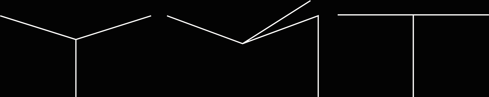
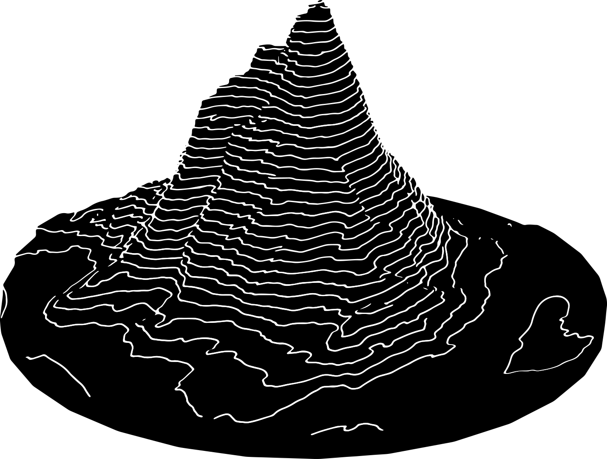

<


Pathfinders

Anne-Liv Seim
Concept direction
project management
layout
content

Signe Wohlfeil
Concept direction
project management
layout
illustration

Hanne Cathrine Johnsen Hauge
Concept direction
project management
logotype
content
Layout direction
Emilia Hanseth
Layout direction
grid
typography
design

Ask Kvamme
Layout direction
grid
typography
design

Marthe Tveit
Layout direction
design


About
A perspective on Distances and MA
Shiny pretty things
Polarised reality
Hjem
Is the loss of nature a loss of proximity?
Earth is my bitch
GRÖNSINKAVÄGEN 810 20
Designing for empathy
On image, insanity, dream and distance
Mind the gap
Liminal space
Distances from people
Editorial

A perspective on Distances and MA
Shiny pretty things
Polarised reality
Hjem
Is the loss of nature a loss of proximity?
Earth is my bitch
GRÖNSINKAVÄGEN 810 20
Designing for empathy
On image, insanity, dream and distance
Mind the gap
Liminal space
Distances from people
Editorial